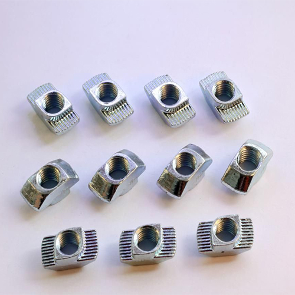
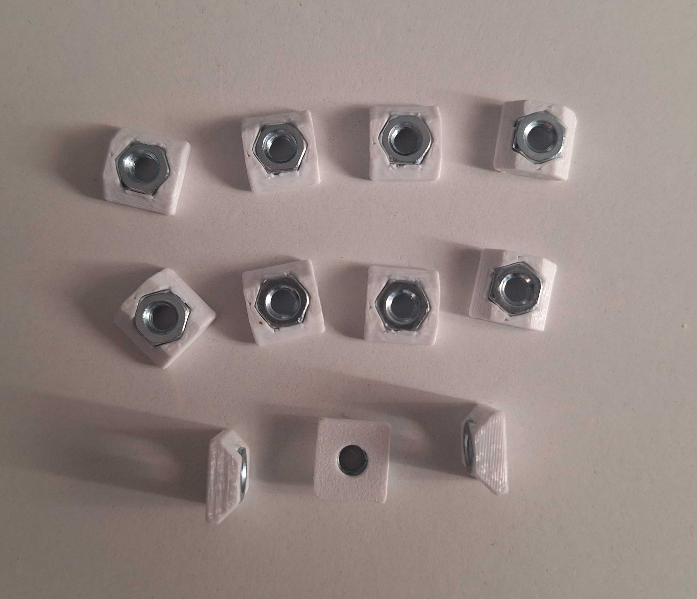
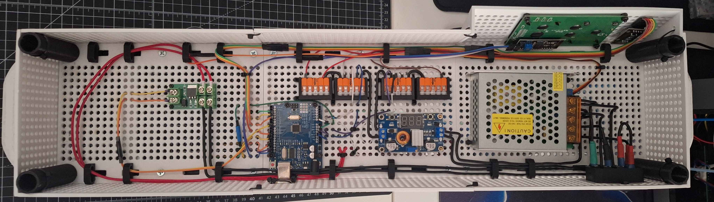
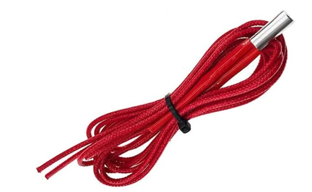
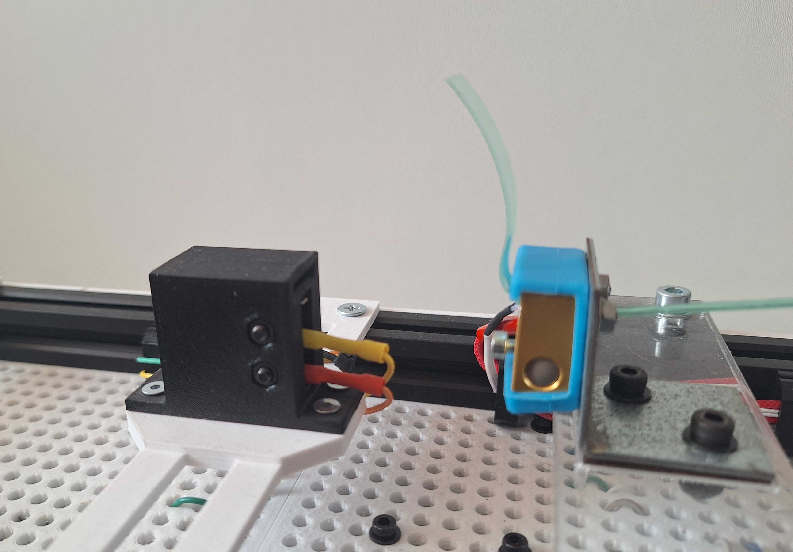
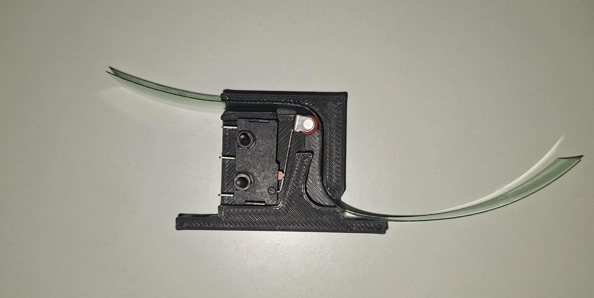
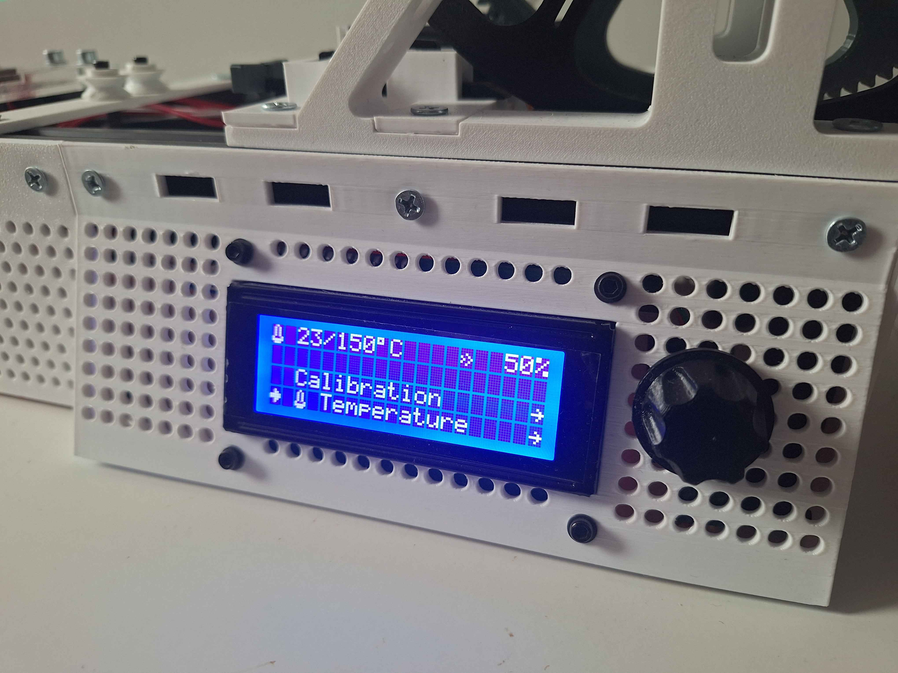
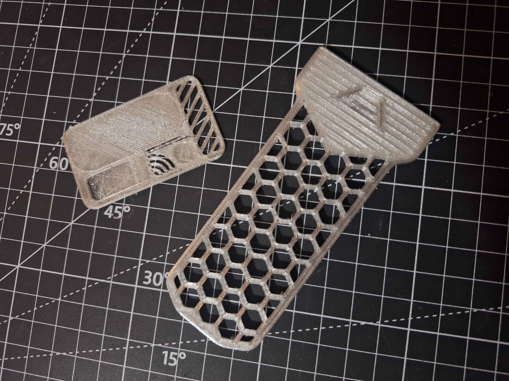

Recyklátor PET lahví na 3D filament
Úvod: Od odpadu k materiálu
Cílem mého semestrálního projektu bylo navrhnout a sestrojit plně funkční modulární zařízení, které dokáže recyklovat použité PET lahve a přeměnit je na kvalitní tiskovou strunu (filament) pro 3D tiskárny. Zařízení funguje na principu pultruze (tažení), kdy je plastový proužek tažen přes vyhřívanou trysku, kde dochází k jeho reformování na standardní průměr 1,75 mm. Tento proces nejen snižuje množství plastového odpadu, ale umožňuje získat technický materiál prakticky zdarma.
Mechanická konstrukce a Bolt-Lock systém
Základem stroje je robustní šasi tvořené dvěma hliníkovými profily. Konstrukce využívá dva rozdílné systémy uchycení komponent podle jejich účelu:
Bolt-Lock systém (Horní funkční moduly):
Komponenty, se kterými je potřeba manipulovat (naviják, vedení filamentu, senzory), jsou uchyceny pomocí tzv. kladívkových T-matic (drop-in nuts). Tento systém umožňuje po povolení šroubu okamžité vyjmutí modulu směrem vzhůru, aniž by bylo nutné posouvat ostatní díly. To zajišťuje snadnou údržbu a rychlou rekonfiguraci stroje.

Pevné šasi (Spodní krytování a rukojeti):
Naopak strukturální prvky, jako jsou ochranné mřížky elektroniky a madla, jsou upevněny pomocí standardních vložných matic. Ty zajišťují maximální pevnost a tuhost celého rámu, ale pro demontáž vyžadují vysunutí z profilu.

Pohon (High-Torque Puller):
Pro posuv materiálu jsem navrhl systém s kontinuálním Arduino servem. Přestože má servo vlastní převodovku, doplnil jsem jej o další externí zpřevodování (viditelné velké ozubené kolo). Toto řešení poskytuje drtivý kroutící moment potřebný k protlačení tuhého plastu a zajišťuje stabilní, pomalý tah bez kolísání rychlosti.
Elektronika a Hardware

Elektronika je "mozkem" stroje, postavená na platformě Arduino Uno, a zajišťuje synchronizaci teploty s rychlostí navíjení.
Tepelný management:
K tavení dochází v upravené komoře osazené keramickým topným tělískem (12V/40W), běžným v 3D tisku. Spínání výkonu řídí MOSFET tranzistor na základě PID regulace, což udržuje teplotu stabilní s přesností na stupně Celsia.

Napájení a bezpečnost:
Systém je napájen 12V průmyslovým zdrojem. Pro logiku Arduina je napětí sníženo efektivním Step-down měničem. Celý obvod je jištěn tavnou pojistkou a silové spoje jsou realizovány přes spolehlivé WAGO svorky.
Senzorika:
Mechanický senzor neustále hlídá přítomnost vstupního proužku. Pokud materiál dojde, systém to vyhodnotí a provede "tiché zastavení" (vypne ohřev i motor), čímž předchází běhu naprázdno.


Software a Uživatelské rozhraní (HMI)
Stroj je plně autonomní a nevyžaduje připojení k PC. Veškeré nastavení probíhá přes integrovaný panel.
Displej a ovládání:
Dominantou panelu je 20x4 LCD displej, který zobrazuje veškeré telemetrické údaje (teplota, rychlost, stav). Ovládání je řešeno intuitivním rotačním enkodérem.

Menu a Funkce:
Software obsahuje pokročilé funkce:
- Presety: Rychlé načtení přednastavených hodnot (teplota/rychlost) pro různé typy a tloušťky lahví.
- Ladění: Možnost manuálně měnit citlivost teplotního senzoru, PID konstanty či rychlost motoru za běhu.
- Easter Eggs: Pro demonstraci výkonu a pokročilého programování (non-blocking kód) jsem do systému integroval i hratelné minihry.
Výzvy a další vývoj
Během realizace jsem musel řešit několik technologických překážek:
Spojování proužků:
Kritickým bodem pro kontinuální provoz je spojování PET pásků před vstupem do stroje. Spoj musí být mechanicky odolný, ale zároveň geometricky přesný, aby prošel tryskou bez zaseknutí.
Slepá ulička - Welder:
Pokus o výrobu externí svářečky hotových filamentů pomocí tělesa z tavné pistole selhal. Ukázalo se, že teplota tavení topného tělesa z tavné pistole (cca 190 °C) je pro svaření PET materiálu (potřeba >250 °C) nedostatečná.
Modularita v praxi:
Díky systému Bolt-Lock je stroj připraven na přidání budoucích modulů:
- Řezačka PET lahve
- Rovnoměrný naviják
- Zpětný navijecí systém
- Svařovač filamentu
- a další
Závěr a další kroky
Cílem mého semestrálního projektu bylo navrhnout a realizovat recyklátor PET lahví, který nebude jen jednoduchým jednoúčelovým strojem, ale komplexní a modulární vývojovou platformou. Tento cíl se podařilo naplnit.
Výsledkem práce je plně funkční zařízení. Po stránce hardwaru a firmwaru je stroj dokončený – podařilo se úspěšně vyřešit mechanickou konstrukci, elektronické řízení i stabilizaci klíčových procesních podmínek. Regulace teploty tavení i udržování konstantní rychlosti pultruze jsou nyní na stroji stabilní a bezproblémové.
V současné chvíli se tak těžiště práce přesunulo od vývoje stroje k ladění samotného technologického procesu výroby. Hlavní výzvou je nyní experimentální stanovení ideálního poměru mezi šířkou řezaného proužku a tloušťkou stěny konkrétní láhve, což je nezbytné pro dosažení konzistentního průměru výsledného filamentu. Souběžně probíhá kalibrace tiskových profilů ve Sliceru (zejména nastavení průtoku materiálu a retrakcí) specificky pro tento recyklát, aby bylo dosaženo co nejvyšší kvality finálních výtisků na 3D tiskárně.
